トップ › 魚種一覧
今週よく釣れている魚
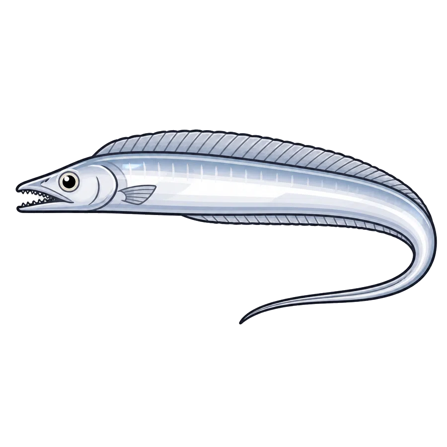
タチウオ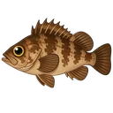
メバル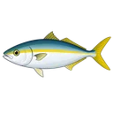
イナダ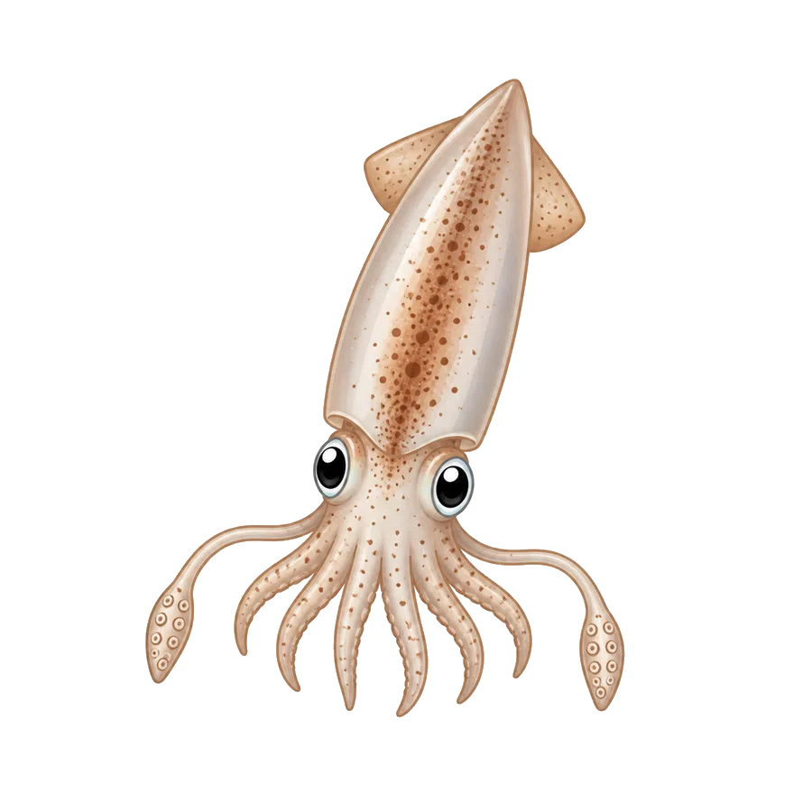
ムギイカ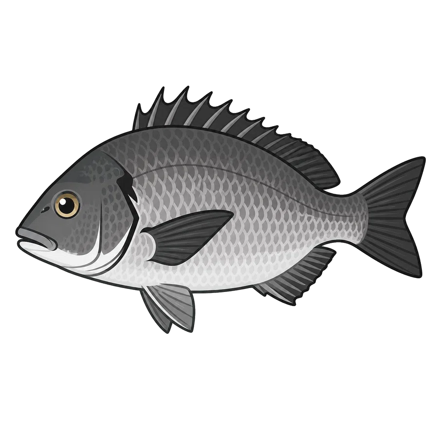
クロダイ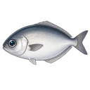
メダイ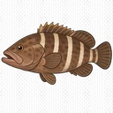
マハタ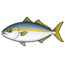
カンパチ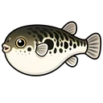
トラフグ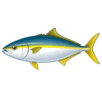
ヒラマサ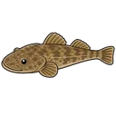
マゴチ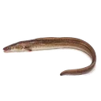
アナゴ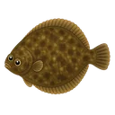
カレイ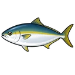
ブリ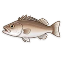
アラ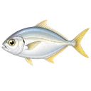
カイワリ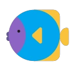
イシモチ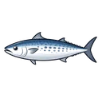
サワラ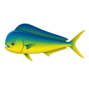
シイラ魚種
各魚種について、関東で釣れる全エリアへの直リンクを網羅。 便数は過去3年の実績報告数。★今週実績ありを上段に、 過去実績のみを下段（折り畳み）に分離。
★ 今週実績あり（50エリア）
★ 今週実績あり（26エリア）
過去実績あり（今週ゼロ・9エリア）を表示
★ 今週実績あり（36エリア）
★ 今週実績あり（23エリア）
過去実績あり（今週ゼロ・7エリア）を表示
★ 今週実績あり（26エリア）
★ 今週実績あり（14エリア）
★ 今週実績あり（16エリア）
過去実績あり（今週ゼロ・7エリア）を表示
★ 今週実績あり（17エリア）
★ 今週実績あり（13エリア）
過去実績あり（今週ゼロ・5エリア）を表示
★ 今週実績あり（15エリア）
過去実績あり（今週ゼロ・2エリア）を表示
★ 今週実績あり（11エリア）
★ 今週実績あり（11エリア）
★ 今週実績あり（5エリア）
過去実績あり（今週ゼロ・2エリア）を表示
★ 今週実績あり（10エリア）
★ 今週実績あり（14エリア）
★ 今週実績あり（13エリア）
過去実績あり（今週ゼロ・9エリア）を表示
★ 今週実績あり（6エリア）
★ 今週実績あり（9エリア）
★ 今週実績あり（7エリア）
過去実績あり（今週ゼロ・7エリア）を表示
★ 今週実績あり（6エリア）
★ 今週実績あり（8エリア）
★ 今週実績あり（6エリア）
★ 今週実績あり（6エリア）
★ 今週実績あり（5エリア）
★ 今週実績あり（4エリア）
過去実績あり（今週ゼロ・5エリア）を表示
★ 今週実績あり（2エリア）
過去実績あり（今週ゼロ・7エリア）を表示
★ 今週実績あり（5エリア）
★ 今週実績あり（3エリア）
★ 今週実績あり（4エリア）
★ 今週実績あり（3エリア）
★ 今週実績あり（2エリア）
過去実績あり（今週ゼロ・5エリア）を表示
★ 今週実績あり（1エリア）
過去実績あり（今週ゼロ・5エリア）を表示
今週実績なし